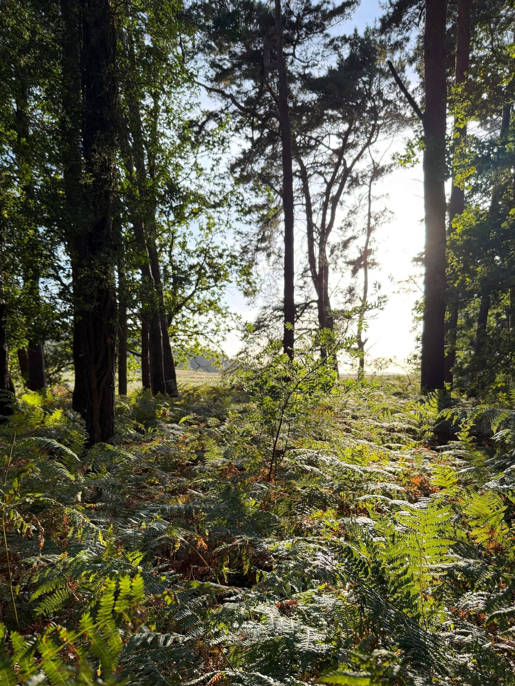
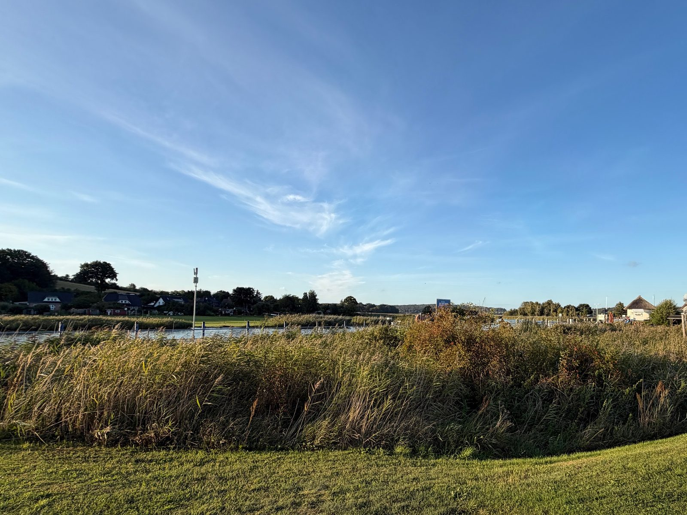
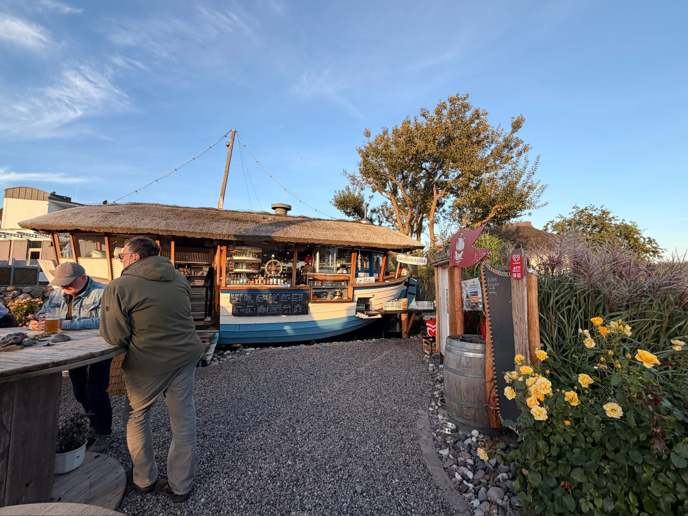
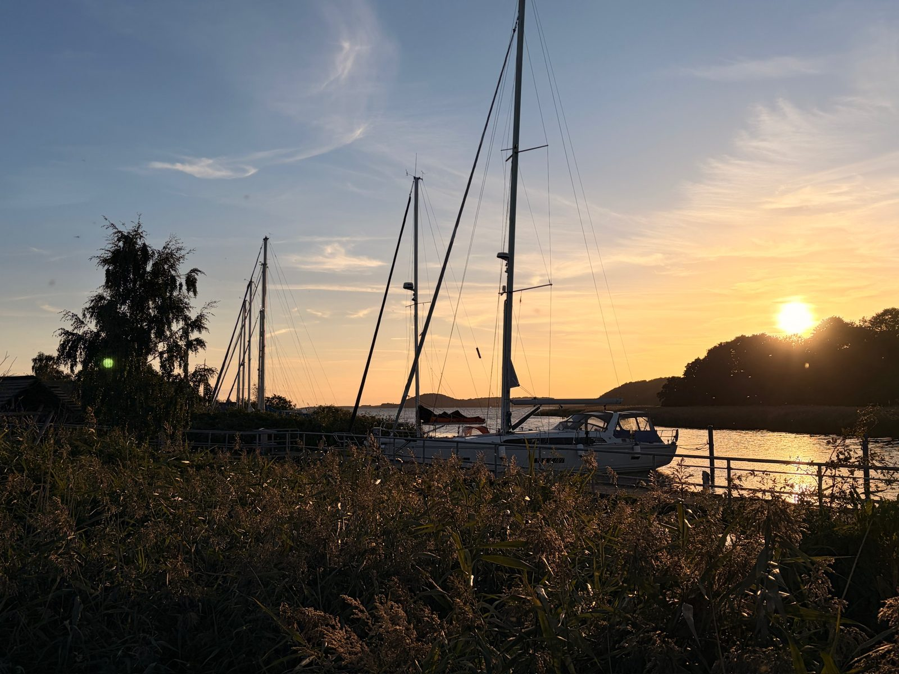
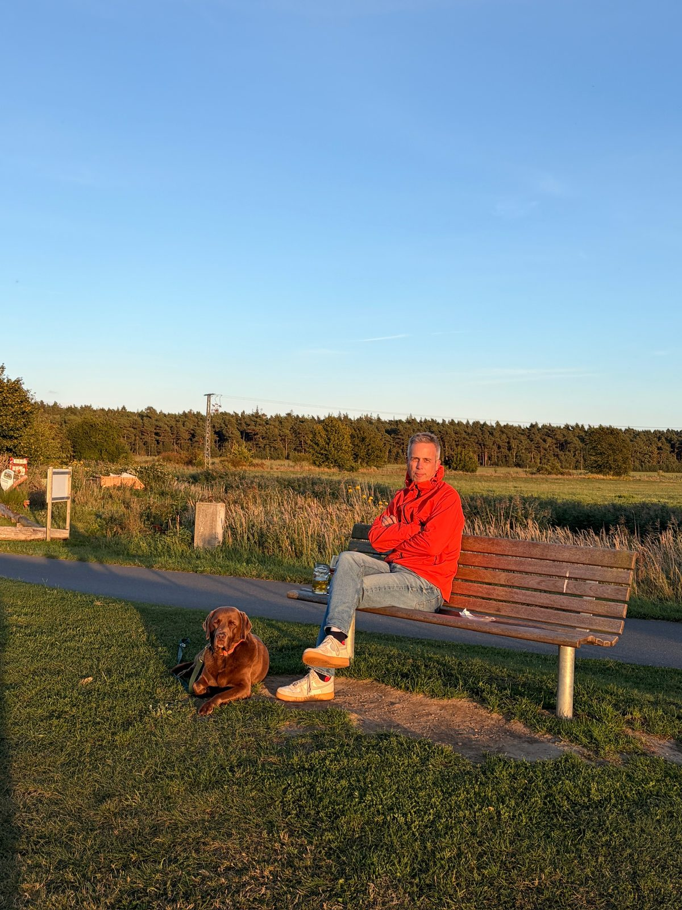
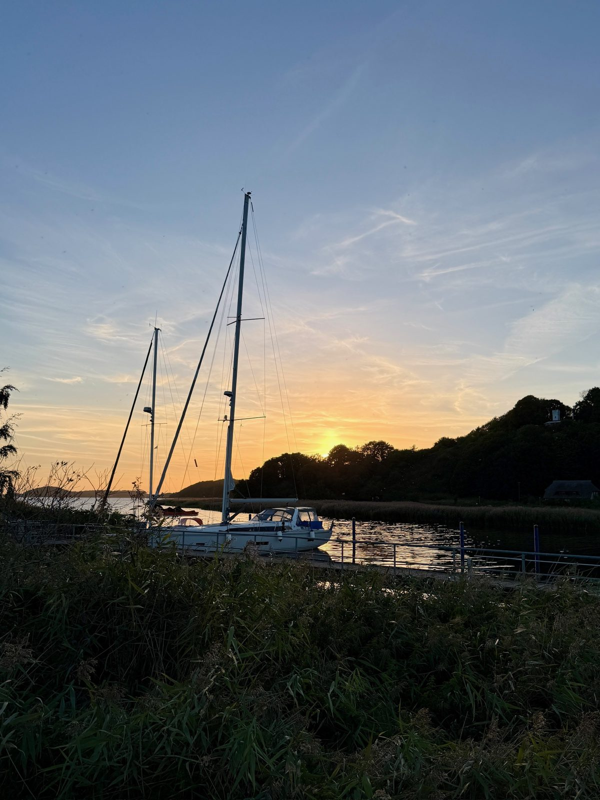

10. September 2026
Sundowner am Hafen


Kurzer Ausflug noch zum Hafen für einen Sundowner heute Abend, mit Blick übers Wasser.




10. September 2026


Kurzer Ausflug noch zum Hafen für einen Sundowner heute Abend, mit Blick übers Wasser.



